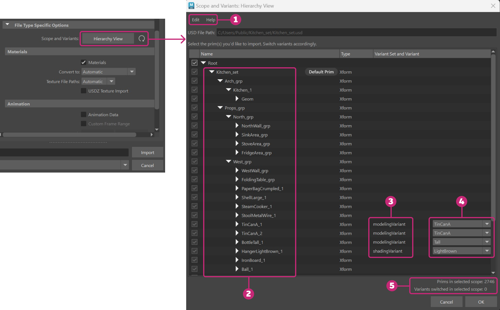

This window appears when you click Hierarchy View in the USD Import options (File > Import). This window helps you build the scope of your USD file for import, letting you select or deselect prims and switch variants. See the table below the following image for information on each part of the Hierarchy View window.

| # | Element | Description |
|---|---|---|
| 1 | Menu Bar | Select Edit > Reset File to reset the scope and variants in the Hierarchy View window. When reset, all prims are selected and all variants are reset. |
| 2 | Prims | A USD file consists of prims, the primary container object in USD. Prims can contain any scene element, like meshes, lights, cameras, etc. Deselect the root prim to deselect all the prims in the file. Use the checkboxes to select and deselect prims to build the scope of your import. Note: By default, the root is selected in the Hierarchy View window. You must deselect the root before you can select specific prims. When a specific prim is selected, its children are also selected for import, but its ancestors are deselected for import. |
| 3 | Variant Set | Each Variant Set is a package of alternatives that users can switch between non-destructively. A variant set has no limits to what it can store. |
| 4 | Variant | A Variant is a single, named variation of a variant set. A single prim can have many variants and variant sets, but only one variant from each variant set can be selected for import into Maya. Variants can be used to swap out a material or change the entire hierarchy of an asset. Use the corresponding dropdown menus to switch between variants in a variant set. |
| 5 | Tracker | Two trackers, one tracks the number of prims in selected scope and the other tracks the number of switched variants in selected scope. Once selections are made, click OK to confirm. After building the scope of a USD file for import, changes can be quickly reset by clicking the icon under File Type Specific Options. |